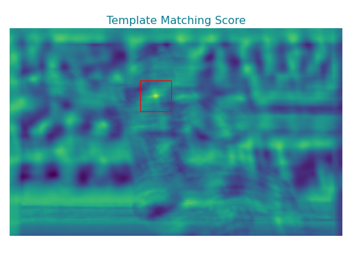

Motivation#
Postprocessing identifies regions of high similarity from the template matching output, which we refer to as peaks. Each peak corresponds to an occurence of the template in the target, which is fully characterized by a translation and rotation vector. Identifying peaks is challenging by itself, hence pytme implements a variety of analysis strategies for optimal performance.
Background#
Lets recall an example from the preprocessing section. The highest peak is located within the red rectangle at 111, 240. Therefore, the maximum similariy is obtained when translating the template so that its center is at position 111, 240. This convention used in pytme to represent in orientations is analogous to other tools and figuratively explained in a skimage tutorial. The corresponding rotation matrix for this peak is the identity matrix.
(Source code, png, hires.png, pdf)
{kind=link}
{kind=link}

Template Matching Output#
match_template.py evaluates the similarity between target and template along all rotational and translation degrees of freedom. The output is a pickle file, whose content depends on the corresponding analyzer. The file can be read using load_pickle. For the default analyzer MaxScoreOverRotations, it contains five objects:
Scores: An array with scores mapped to translations.
Offset: Offset informing about shifts in coordinate sytems.
Rotations: An array of optimal rotation indices for each translation.
Rotation Dictionary: Mapping of rotation indices to rotation matrices.
Metadata: Coordinate system information and parameters for reproducibility.
However, when you use the -p flag the output structure differs
Translations: A numpy array containing translations of peaks.
Rotations: A numpy array containing rotations of peaks.
Scores: Score of each peak.
Details: Additional information regarding each peak.
Metadata: Coordinate system information and parameters for reproducibility.
Note
In general, all but the last element of the created output pickle will correspond to return value of a given analyzer’s merge method.